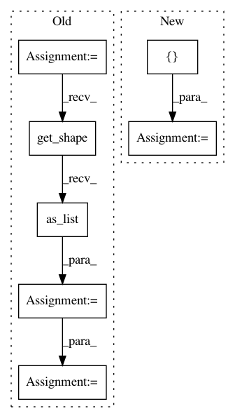

5b5ea7b5d864e53894f5342f19becfba8f8035e5,niftynet/network/interventional_dense_net.py,INetDense,layer_op,#INetDense#Any#Any#Any#Any#,49
Before Change
up_res_3 = UpRes(self.fea[0], **self.res_param)(
up_res_2, conv_0_0, is_training)
conv_5 = Conv(n_output_chns=spatial_rank,
kernel_size=self.k_conv,
with_bias=True,
with_bn=False,
acti_func=None,
**self.disp_param)(up_res_3)
if base_grid is None:
in_spatial_size = [None] * spatial_rank
out_spatial_size = conv_5.get_shape().as_list()[1:-1]
base_grid = _create_affine_features(output_shape=out_spatial_size,
source_shape=in_spatial_size)
base_grid = np.asarray(base_grid[:-1])
base_grid = np.reshape(
base_grid.T, [-1] + out_spatial_size + [spatial_rank])
base_grid = tf.constant(base_grid, dtype=conv_5.dtype)
dense_field = base_grid + conv_5
// TODO filtering
if self.smoothing_func is not None:
dense_field = self.smoothing_func(dense_field, spatial_rank)
return dense_field
After Change
if self.multi_scale_fusion:
output_list = [up_res_3, up_res_2, up_res_1, up_res_0, conv_4]
else:
output_list = [up_res_3]
// converting all output layers to displacement fields
dense_fields = []
for scale_out in output_list:
In pattern: SUPERPATTERN
Frequency: 4
Non-data size: 7
Instances
Project Name: NifTK/NiftyNet
Commit Name: 5b5ea7b5d864e53894f5342f19becfba8f8035e5
Time: 2017-12-18
Author: wenqi.li@ucl.ac.uk
File Name: niftynet/network/interventional_dense_net.py
Class Name: INetDense
Method Name: layer_op
Project Name: NifTK/NiftyNet
Commit Name: 6f405851fcb3be013441810be9a7edbbc04fd2a3
Time: 2018-05-15
Author: d.shakir@ucl.ac.uk
File Name: niftynet/layer/loss_segmentation.py
Class Name: LossFunction
Method Name: layer_op
Project Name: tensorflow/tensorflow
Commit Name: 38213428929862120bdb32b963a600792ec6feb2
Time: 2020-12-29
Author: hyey@google.com
File Name: tensorflow/python/kernel_tests/extract_image_patches_grad_test.py
Class Name: ExtractImagePatchesGradTest
Method Name: testGradient
Project Name: tensorflow/tensorflow
Commit Name: c1efa5341c713b21acefb2536e59ccae232ab066
Time: 2020-12-29
Author: hyey@google.com
File Name: tensorflow/python/kernel_tests/extract_volume_patches_grad_test.py
Class Name: ExtractVolumePatchesGradTest
Method Name: testGradient